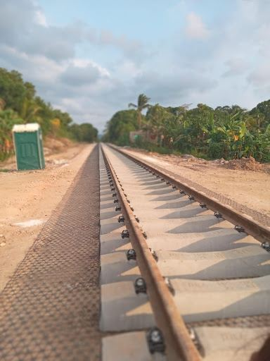
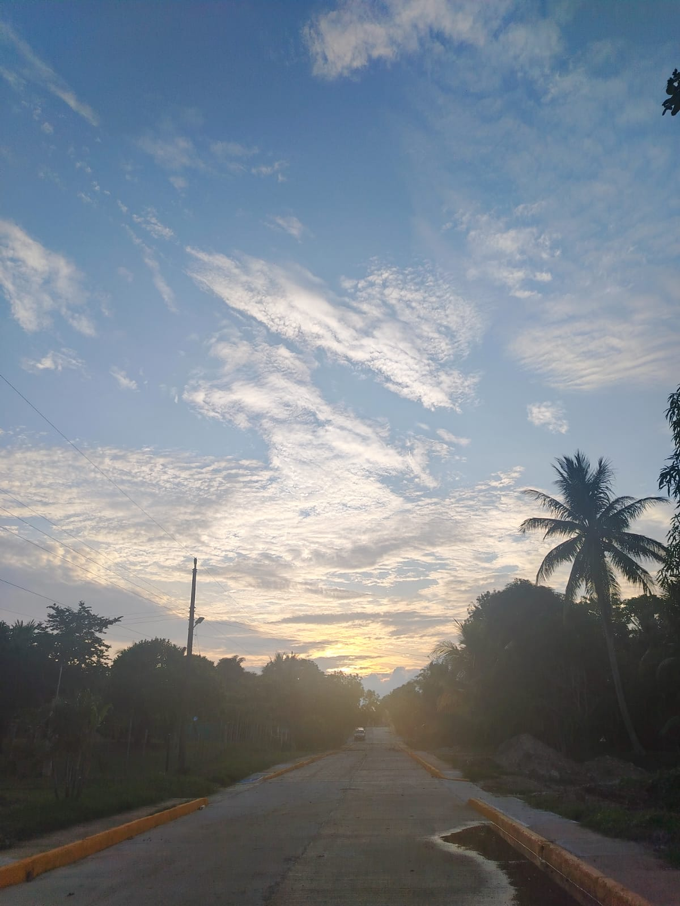
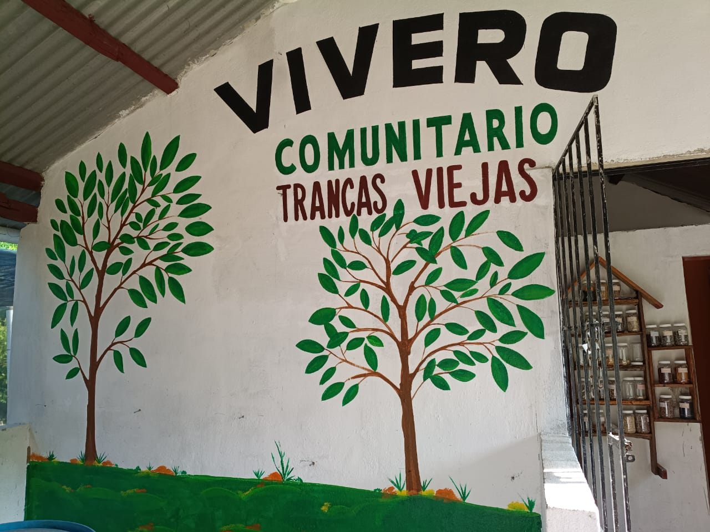
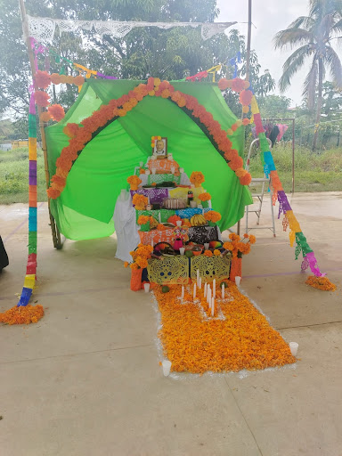
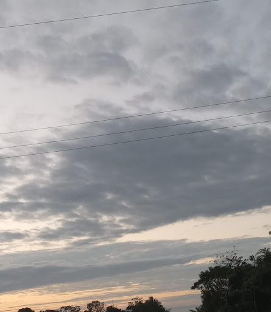

Nuestra Historia
Un espacio dedicado a reunir información sobre los antecedentes y la memoria de Trancas Viejas.
Explorar historia →Historia, comunidad y tradiciones
Trancas Viejas es nuestra comunidad en Moloacán, Veracruz. Somos un pueblo tranquilo de gente trabajadora dedicada al campo, la milpa y la ganadería.
Aquí nos conocemos entre vecinos, nos apoyamos en las faenas y cuidamos nuestras costumbres.

Conoce algunos de los lugares, paisajes y tradiciones que forman parte de la comunidad.

Un espacio dedicado a reunir información sobre los antecedentes y la memoria de Trancas Viejas.
Explorar historia →
Conoce algunos de los espacios que forman parte del entorno de nuestra comunidad.
Ver lugares →
Fotografías y contenido relacionado con las tradiciones y actividades de la comunidad.
Conocer eventos →
Una colección de fotografías de paisajes, naturaleza y distintos espacios de Trancas Viejas.
Abrir galería →"Trancas Viejas se construye todos los días con el esfuerzo de su gente, el trabajo en el campo y la unión de la comunidad."— Comunidad de Trancas Viejas
Trancas Viejas pertenece al municipio de Moloacán, en el estado de Veracruz.